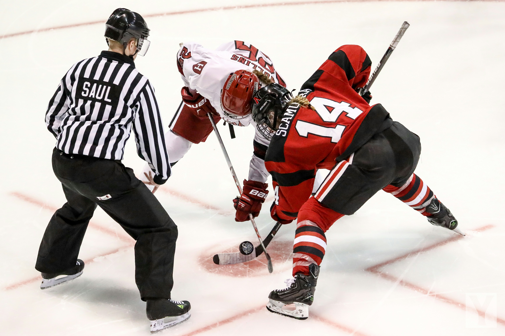

Jääkiekon säännöt
Jääkiekossa on paljon sääntöjä, jotka määräävät pelin kulun ja pelaajien
toiminnan.
Lyhyt selostus tärkeimmistä säännöistä
Säännöt takaavat pelin oikeudenmukaisen kulun ja pelaajien
turvallisuuden. Säännöt voivat hieman vaihdella ammattilaissarjoissa,
mutta perusperiaatteet ovat samat.
-
Jäähyt, jos pelaaja rikkoo sääntöjä, seuraa pienimmillään 2 minuutin
rangaistus, jolloin pelaaja joutuu istumaan jäähyaitiossa ja joukkue
pelaa vajaalla miehityksellä. Yleisimpiä jäähyjä ovat mm. kampitus,
estäminen, huitominen, kiinnipitäminen
-
Pelissä tulee pelikatkoja, jolloin tuomarit viheltää pilliin ja peli
pysähtyy, esimerkiksi, jos kiekko menee katsomoon, pelaaja loukkaantuu
tai tapahtuu sääntörike.
-
Paitsio, tapahtuu kun hyökkäävä pelaaja menee siniviivan yli ennen
kiekkoa.
-
Pitkä kiekko, tapahtuu kun kiekko menee vastustajan päätyyn asti
häiritsemättä ja kiekkoon on koskettu viimeksi ennen kentän puoliväliä.

Tuomarin erottaa mustavalkoisesta paidasta
Lue lisää säännöistä tarkemmin Suomen jääkiekkoliiton sääntökirjasta